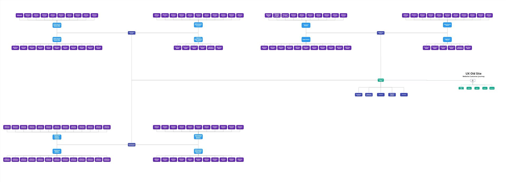
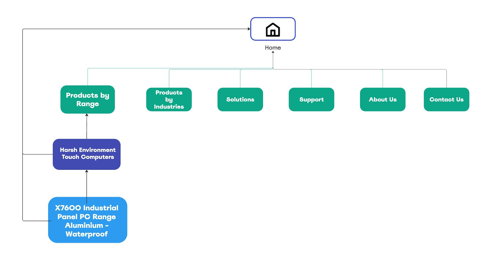

01 / 06 • Case study
STX Technology
Industrial computers built for harsh environments. A website that made customers work too hard to find one.
- Client
- STX Technology
- Role
- Creative Director
- Craft
- Adobe Suite • Blender • WordPress
- Scope
- Brand, UX/UI, web, photography, 3D, print, WHS signage

The brief
STX brought me on board to lead their full rebrand. Not a logo refresh; everything a customer touches. UX/UI design, a web redesign, product photography, 3D rendering and a complete suite of print and WHS signage.
One person holding the whole picture meant every piece could speak the same language, from the homepage to the noticeboard in the workshop.
The problem
Before designing anything, I sat down with David, the owner, to understand how customers actually buy. The answer was buried in the catalogue.
STX sells many models, in many screen sizes, with many accessories. The old site mirrored that complexity: a customer needed too many clicks before they ever saw a product.

The fix
I rebuilt the journey around one question: what does the customer need to see next? The new structure flattens the catalogue so products sit a click or two from the homepage.
The product card did the rest. Instead of sending people to a new page for every spec, key details reveal on hover, so customers compare models without leaving the grid.
See the product card prototype on CodePen ↗
From homepage to product, without the scavenger hunt.
The interface
A clean, technical interface that lets the hardware lead. Designed for widescreen and mobile, and built in WordPress.


The product, photographed
Stainless steel is unforgiving to shoot; every reflection shows. I photographed the range in studio so each model reads clearly, from the front panel to the ports on the back.


The product, rendered
Then I rebuilt it in Blender. With accurate 3D models, STX can show any model, from any angle, for any new page or brochure; no new photo shoot required.


On paper, on the wall
The brand didn't stop at the screen. Brochures, folders, and a full set of WHS signage for the workshop; committee boards and risk assessment panels that look like they belong to the same company as the website.


What I did
- Brand identity
- UX research
- UX/UI design
- Web design
- Product photography
- 3D rendering
- Print design
- WHS signage
Next story • 02 / 06
Tauranga Arts Festival